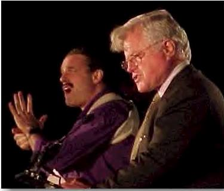

: Why do interpreters' farts smell?
: Why do interpreters' farts smell?
A: So that Deaf people can have access to them, too.

: Why do interpreters' farts smell?
A: So that Deaf people can have access to them, too.
 n the subject of tipping interpreters, it depends for me. One time, I was interpreting a drag show and the Deaf people started tipping me. I didn't have any pockets, so I lay the money on the table beside me (I couldn't hold it in my hands, now, could I?) and continued to interpret.
n the subject of tipping interpreters, it depends for me. One time, I was interpreting a drag show and the Deaf people started tipping me. I didn't have any pockets, so I lay the money on the table beside me (I couldn't hold it in my hands, now, could I?) and continued to interpret.
(In response to above:) Ahem. If you get tipped like the dancers, you should store the money like the dancers. O:-)
ne local terp I know is much cherished here. Even I at times think she's a bit too "helpful" but I wouldn't trade her in. She's too effective in communicating tone and implied messages via sign or facials. I find this usual given where I work.
But let me tell you one of the reasons she is held dear. It's not because she's a pushover, quite frankly, you wouldn't want to piss her off. But here's one of many examples of her HUMAN side. DP is a car accident. Hospital is loathe to provide a terp. She gets wind of it, offers services free (because she knows this city and how ignorant and ARROGANT it is, especially doctors when it comes to any disabled group). They often refuse to provide services the law says they should. Now, the DP is new in town at the time and from a rather distant location (an island). During this time, the doctors handled his injured legs and hands roughly, in fact, they acted like sadists, ignoring the DP's howls of obvious pain. They worked on him without pain killers or anesthetics when such were clearly called for.
Yes, some doctors here are that callous because they have gotten away with it, indeed a lot of people here ,hearing or Deaf go to California for treatment rather than use local doctors so it's that bad. Back to our terp. She basically stood up to those doctors on his behalf, was there often at the hospital since his family was very distant and if I recall right, were not informed of his situation for some reason. In a nutshell, she stayed and protected him from abuse there. To this day, he cherishes her and so do a lot of other Deaf, myself included. My point is, some terps have a following simply because they remember how to be human beings while others have become distant and aloft. Smart businesses know that to keep customers you have to have a person touch.
Now list [TERPS-L], don't go foolish by implying I am saying you have to cater to every Deaf whim, surrender your life to servitude and other such hogwash. You know I am saying that in some cases terps with a following have it because they don't treat the Deaf like lepers, or have an attitude of "Here's your spoon, now pay me and get out of my way as I head for the door." I'm all for professionalism but some behaviors I have seen border on resentment and make us Deaf wonder why the person is a terp.
 assive voice
assive voice
"It is given to me"
is the passive they're parsing
in linguistics class.
I'm interpreting for
a deaf girl making
eyes at me
and noise with her corn chips'
plastic wrapper.
She's tongueing a corn chip
and wrinkling her nose
which she knows I know
means ooh salty,
and telling me in
no uncertain terms
it is given to me.
Sometimes it happens
that way, love
just lands in your lap,
starts conjugating itself
in the second person
singular.
So I ask her to marry me,
to give up linguistics,
come live with me in
my house in the suburbs
among the Thickly Settled signs.
Here's the church
and here's the steeple.
The deaf people sit
where they can see the interpreter.
We'll name our first child
Vowel, after
the dilating mouth
of pleasure,
we'll fill our home
with the tongues of a hundred
speechless lives:
the plosives of fish
browsing the fishbowl,
the shrugging shoulders
of the spider plants,
the noiseless stutter
of candles.
 e the willing led by the unknowing are doing the impossible for the ungrateful. . . We have done so much for so long with so little we are now qualified to do anything with nothing.
e the willing led by the unknowing are doing the impossible for the ungrateful. . . We have done so much for so long with so little we are now qualified to do anything with nothing.
 Melby, A. K. (1995). Why can't a computer translate more like a person? Webmaster: I have included this same web site under "Interpreter error" because it talks about machine and human errors. The reason that it is here also is that I believe if you read it you will acquire greater respect for translators (and similarly for interpreters) who get it right most of the time.
Melby, A. K. (1995). Why can't a computer translate more like a person? Webmaster: I have included this same web site under "Interpreter error" because it talks about machine and human errors. The reason that it is here also is that I believe if you read it you will acquire greater respect for translators (and similarly for interpreters) who get it right most of the time.
 letter of thanks [from a mentored interpreting student]
letter of thanks [from a mentored interpreting student]
I would like to take this time to thank all the interpreters for sharing their gifts with me. I have come to the understanding that interpreters are like musicians. You must practice everyday. You must possess the desire to keep improving your talents. You expose your soul in every performance. Your audience is forever changing, and can be critical of even your best work. Much like a musician who interprets a score, it's not just the notes, words, or signs themselves, but how you render them. Some interpreters produce symphonies, and other, soft rock. Regardless of your particular style, like a musical note, your work exists for only a second in time, and then vanishes. The interpreter is the musician who transforms words into life, as they change them from one mode to another.
Thank you for allowing me to observe you. You demonstrated how additions clarify, how repetitions emphasize, how omissions can reduce confusion, and what a gift lag time is. Watching you work was a far more effective lesson than any classroom lecture. Your attitude and demeanor speak volumes. What wonderful role models you are! You've exceeded my expectations with such grace!
You offered yourselves as mentors. I can't thank you enough for giving so much of yourselves to me. You encouraged, corrected, guided and practiced with me, and you listened to me. You encouraged me to fly, and when I crash landed, you picked me up, mended my ego, and encouraged me to fly again, suggesting a slightly modified flight plan. You endured my blunt questions, my mediocre fluency, my lack of patience, and my frustrations. You listened to me and showed me that you cared.
It's been a privilege to know you. Thank you for sharing your time and your talents with me, i have grown, and I only hope that one day, I can become as gifted a musician as you are. Thank you.
 nterpreter's Christmas song
nterpreter's Christmas song
Fingers flying in the open air
Coffee belching down below
folks rush to work with a desperate flair
and don't have time for love to show
Everybody knows that up thumb Paul's a-working still
At keeping spam off of the list
James and Susan voice opinions at will
And we all feel like we've been kissed
We know that 2001 will bring a change
We know that life will change over time
And every teachers wish will have a range
In hopes the students finally learn to sign
And so I'm offering some shinning rays
For terps from grads to CODAs too
Although it can be signed many times many ways
Merry Christmas to you
Although it can be signed many times many ways
Merry Christmas to you
nterpreters do it orally, manually, and simultaneously!
hat then shall we say brothers? When you come together, everyone has a hymn, or a word of instruction, a tongue or an interpretation. All of these must be done for the strengthening of the church. If anyone speaks in a tongue, two -- or at most three -- should speak, one at a time, and someone must interpret. If there is no interpreter, the speaker should keep quiet in the church and speak to himself and God.
 ign trivia
ign trivia
Q: Which son of a United States president knew sign language and liked to use it on a daily basis with the White House police?
A: Archie Roosevelt, a pre-teenaged son of President Theodore Roosevelt, learned signs from one of the White House police officers and liked to use it daily. He wanted to volunteer as an interpreter for the deaf White House visitors but the father nixed the idea!
 he only real voyage of discovery consists not in seeking new landscapes but in having new eyes.
he only real voyage of discovery consists not in seeking new landscapes but in having new eyes.
n interpreter should be like a duck:
Above the surface look calm amd unruffled. . .
Below the surface, paddle like hell!!
ilent Hommage (A tribute to interpreters)
The moving lips speak voicelessly -- but hark:
The winging words fly from your fluttering hands;
And each, who dwells in silence, understands
How Dawn, the rosy-fingered, burns the dark
From shadow-worlds wherein the teeming brain
Lay, like a captive, in a dungeon-cell;
Your magic bursts the iron citadel,
And breaks the lock, and brings the light again!
Dear friend, how empty, vain and commonplace
Must seem this gratitude we offer you;
Yet now we render homage, as your due,
Remembering your patience, love and grace --
With twining fingers as you blithely go,
Daily, to fell our Walls of Jericho.
ur hope
Some of the dominant class join the oppressed in their struggle for liberation. Theirs is a fundamental role and has been so throughout the history of this struggle. However, as they move to the side of the exploited they always bring with them the marks of their origin. Their prejudices include a lack of confidence in the people's ability to think, to want, and to know. So they truly desire to transform the unjust order, they believe that they must be executors of the transformation.
They talk about the people but thy do not trust them: and trusting the people is the indispensable precondition for revolutionary change. A real humanist can be identified more by his trust in the people, which engages him in their struggle, than by a thousand actions in their favor, without their trust.
nterpreters do it with meaning.
n ode to interpreters
Although you're not deaf,
our doorway to the silent world
is always open.
Your communication flows
in either sound or silence
which can open the eyes and ears
of those who can and cannot hear.
Your understanding of both sides of the coin
The Best of Both Worlds. . . Yours and Mine.
is a gift of a special kind of culture
which can never be taken away.
knowing that you have
the greatest gift of all. . .
nterpreters influence languages
In the sixteenth century, Austria's ambassador visited Turkey and became enchanted with the unusual flowers there. The Turks' traditional name for this flower was "lale", but because of its shape, the Austrian's interpreter jokingly called the blossom a "tulbend", which is the Turkish word for "turban." The ambassador delightedly brought home several of these exotic plants and its picturesque nickname as well, which eventually wound up in English as "tulip."
nterpreters are human
Interpreters are human, believe it or not, much like the rest of us.
They come in both sexes and in various sizes,
but they are usually ladies, who are always most attractive.
Interpreters are found everywhere:
Interpreters must have
An interpreter who does well "has such beautiful
motions." When he gets confused and flustered
he "disrupts the whole meeting."
At church he interprets the invocation . . .
Interpreters are asked questions:
Interpreters are at work in any kind of weather --
An interpreter who stands up in the front of the
audience seeks attention. If he sits down to interpret
he doesn't put himself into his work. If he speaks out
during the meeting he is out of his professional role.
If he keeps silent he is not supportive. If he has been
interpreting for only a few years he lacks experience.
If he has been interpreting for many years he is in a rut
and old fashioned. If he uses a lot of facial expression
he distracts from the speaker. If he doesn't he is a
dead-pan puppet. If he doesn't train others to help him
he thinks no one is as good as he is. If he does train
others he is trying to pass himself off as an expert.
Interpreters like:
Interpreters are human --
Return to the table of contents for "Humor and stories for interpreters".